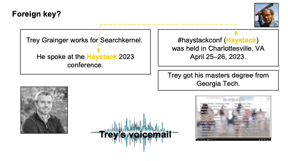
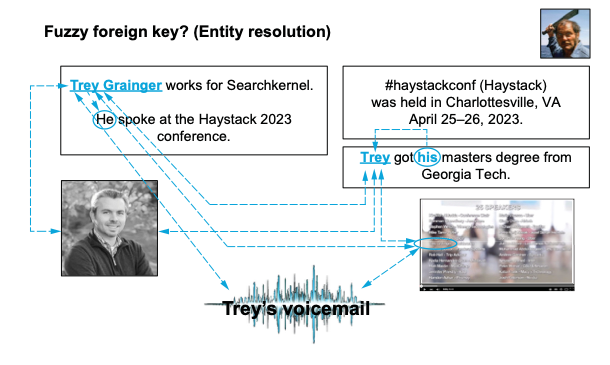
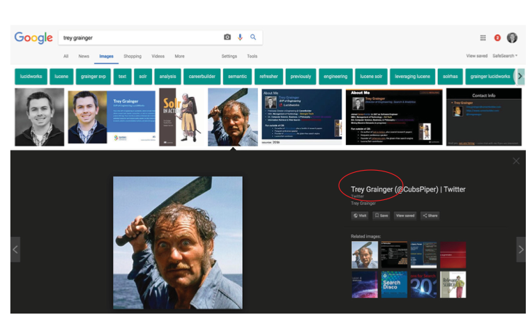
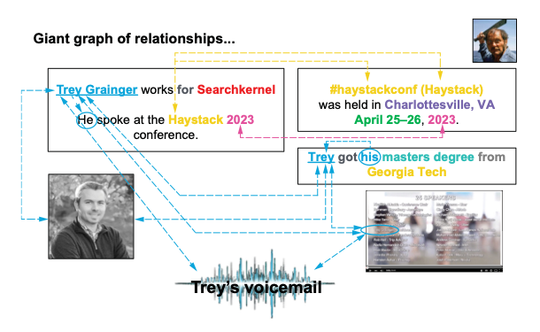
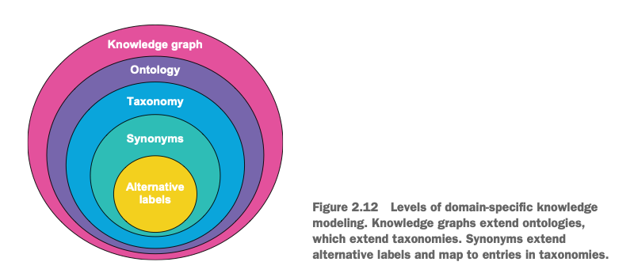

자연어 다루기
이 장의 목표는 개별 검색 기술을 곧바로 구현하는 것이 아니다. 앞으로 해결할 상위 수준의 문제를 같은 관점에서 바라볼 수 있도록, 자연어·의미·도메인 지식·검색 의도에 관한 공통 멘탈 모델과 용어를 먼저 맞추는 것이다.
자연어는 구조가 없는 데이터가 아니라, 엔티티와 맥락과 관계가 겹겹이 담긴 거대한 도메인 지식 그래프다.
이 관점에 합의하면 동의어, 임베딩, 지식 그래프, 개인화와 LLM을 서로 분리된 기능이 아니라 같은 검색 문제를 해결하는 도구들로 연결해 이해할 수 있다.
구현에 앞서 공통 멘탈 모델 맞추기
검색은 콘텐츠와 쿼리 양쪽의 자연어를 다뤄야 한다. 그 안에는 키워드뿐 아니라 엔티티, 개념, 오탈자, 동의어, 약어, 모호한 표현, 명시적·암묵적 관계, 계층과 지식 그래프가 한꺼번에 존재한다.
따라서 개별 문제를 곧바로 고치기 전에, 우리가 무엇을 같은 개념으로 부르고 각 기술이 어떤 문제를 담당하는지 합의해야 한다. 이 장은 이후의 동의어 학습, 지식 그래프, 개인화, 벡터 검색과 LLM 활용을 하나의 시스템으로 묶는 개념 지도다.
구현 코드를 기억하는 것이 아니라, 자연어에 어떤 구조가 숨어 있는지, 그 의미를 어떤 수준으로 표현하고 계산하는지, 검색에서 무엇이 아직 어려운지를 같은 용어로 설명할 수 있으면 된다.
자연어를 비정형 문자열이 아니라 여러 해상도의 구조와 관계를 가진 데이터로 본다.
분포 의미론과 임베딩으로 표현 사이의 관계를 수치화하고 매칭·랭킹에 활용한다.
대체 레이블에서 지식 그래프까지, 도메인 지식을 점점 풍부하게 모델링한다.
중의성·맥락·개인화·의도를 정의하고, 콘텐츠와 행동 신호를 해결의 연료로 본다.
앞으로 함께 쓸 공통 용어
같은 단어를 서로 다른 뜻으로 사용하지 않도록, 이후 장에서 반복해서 사용할 개념의 기준을 먼저 맞춘다.
- 엔티티 해소
- “Trey”, “Trey Grainger”, “그”처럼 표현은 달라도 같은 실체를 가리킨다고 판별하는 과정.
- 다의성·중의성
- 같은 표기의 단어나 구가 맥락에 따라 여러 의미를 갖는 현상. 책에서는 polysemy로 설명한다.
- 역색인
- 각 용어를 그 용어가 등장하는 문서 목록(postings list)에 연결하는 어휘 검색의 핵심 자료구조.
- 분포 가설
- 비슷한 맥락에서 함께 나타나는 단어들은 비슷한 의미를 갖는다는 가설.
- 임베딩
- 텍스트·이미지·행동 등의 의미를 벡터 공간의 수치 좌표로 표현한 것.
- 코사인 유사도
- 두 벡터 사이의 각도를 이용해 방향, 즉 의미적 유사성을 비교하는 척도.
- 분류 체계
- 사물을 상하위 범주로 분류하는 taxonomy. 탐색과 필터링의 뼈대가 된다.
- 온톨로지
- 도메인에서 “종류들 사이의 관계”를 정의한 모델. 알려진 사실로부터 새 사실을 추론할 수 있다.
- 지식 그래프
- 온톨로지의 관계에 실제 엔티티와 사실 인스턴스까지 채워 넣은 도메인 지식 표현.
- 쿼리 의도
- 질의어 너머의 목표. 탐색, 구매, 지원, 정답 찾기, 이동, 특정 행동 수행 등이 있다.
비정형 데이터라는 신화
멘탈 모델 ①: 자연어는 구조가 없는 데이터가 아니라, 아직 명시적인 스키마로 펼쳐지지 않은 관계 데이터다.
텍스트는 미리 정의된 표 스키마에 맞지 않는다는 이유로 “비정형”이라 불린다. 그러나 문장 구조, 문법, 구두점, 품사, 단어 사이 관계는 강한 구조를 이룬다. 노래를 단지 “임의의 음파”라 부르면 박자·선율·화음이 사라지는 것처럼, 텍스트를 비정형이라고 부르면 그 안의 의미 구조를 놓치기 쉽다.
2.1.1 비정형 데이터의 유형
단어와 문장 규칙으로 의미를 부호화한다.
말뿐 아니라 감정, 억양, 음악, 겹치는 소리까지 담는다.
색의 격자와 시간에 따른 프레임·오디오의 결합으로 의미를 만든다.
날짜·이벤트 유형 같은 정형 필드와 자유 텍스트가 섞인 반정형 데이터다.
2.1.2 전통적 구조화 DB와 비교
관계형 데이터베이스의 열에는 ID나 이름 같은 이산 값, 날짜·수치 같은 연속 값이 들어간다. 서로 다른 행과 표는 공통 ID, 즉 외래 키로 조인한다.
텍스트의 여러 문서에도 같은 이름이나 사건이 반복된다. 그렇다면 공유된 엔티티를 외래 키처럼 사용해 문서를 연결할 수 있지 않을까?
2.1.3 조인, 퍼지 조인, 엔티티 해소 ★ 핵심
두 문서에 “Haystack”이 공통으로 등장하면 엄격한 외래 키처럼 연결할 수 있다. “Trey Grainger”와 “Trey”, 대명사 “그”와 “그의”처럼 표현이 다르지만 동일 인물을 가리키는 경우에는 엔티티 해소가 퍼지 외래 키 역할을 한다.

서로 다른 텍스트 블록의 Haystack이라는 정확히 같은 표현이 두 문서를 연결한다.

Trey Grainger, Trey, he, his와 여러 매체의 단서가 하나의 인물로 해소된다.
① 정확 조인: 두 문서에 동일한 “Haystack”이 있어 그대로 연결한다.
② 엔티티 해소: 이름의 전체형·축약형과 대명사를 주변 문맥으로 같은 인물에 연결한다.
③ 멀티모달 연결: 텍스트뿐 아니라 얼굴 이미지, 영상 속 이름, 음성까지 동일 엔티티의 증거로 합친다.
하지만 표기가 같다고 실체도 같지는 않다. 검색 결과에는 저자와 동명이인인 “Trey Grainger”의 프로필 이미지가 함께 나타난다. 같은 문자열이 여러 실체나 의미를 가리키는 중의성(polysemy) 때문에, 검색은 주변 맥락을 이용해 연결해야 할 대상과 끊어야 할 대상을 구분해야 한다.

“Trey Grainger”라는 같은 표기가 서로 다른 사람을 가리킨다. 문자열 일치만으로는 올바른 엔티티를 결정할 수 없다.
사람, 회사, 장소, 행사, 날짜와 이들 사이 관계를 연결하면 작은 문서 집합에서도 거대한 그래프가 드러난다. LLM은 대규모 학습 데이터의 이런 관계를 내부 파라미터에 담고, 역색인은 우리 코퍼스 안의 용어↔문서 연결을 빠르게 순회하게 한다. 일반 LLM에는 도메인 지식의 미세조정과 오류 검증이 여전히 필요하다.

정확 조인과 엔티티 해소를 누적하면 사람·회사·행사·장소·날짜·학력이 연결된다. 중의성이 해소된 동명이인 이미지는 이 그래프에서 제외된다.
자연어의 구조
멘탈 모델 ②: 의미는 문자부터 코퍼스까지 여러 해상도에 존재하며, 검색은 필요한 단위를 골라 연결한다.
검색 관점에서 의미는 여러 해상도로 존재한다. 각 수준은 도메인 언어를 이해하는 서로 다른 단서를 준다.
구(phrase)는 용어들이 연속해서 나타나는 용어 시퀀스다. "chief executive officer"는 구이자 용어 시퀀스지만, 두 위치 이내를 허용하는 "chief officer"~2는 연속되지 않을 수 있어 용어 시퀀스일 뿐이다.
텍스트 분석기는 공백·구두점 분리, 소문자화, 불용어 제거, 어간 추출·표제어 추출, 악센트 제거 등을 수행한다. 쿼리가 실행되면 전체 코퍼스는 해당 쿼리와 관계있는 문서 집합으로 좁혀지고, 이 집합 자체가 의미를 해석하는 하나의 맥락이 된다.
분포 의미론과 임베딩 ★ 핵심
공통 계산 언어: 함께 등장하는 맥락에서 의미 관계를 배우고, 그 관계를 비교 가능한 벡터와 점수로 표현한다.
분포 가설은 비슷한 맥락에 나타나는 단어가 비슷한 의미를 가진다고 본다. “machine learning”과 함께 “software engineer”가 자주 등장하고 “food service worker”는 거의 등장하지 않는다면, 검색엔진은 전자와 더 강한 의미 관계를 추론할 수 있다.
c?o 같은 문자열 패턴, "VP Engineering"~2 같은 근접 용어 시퀀스, (Microsoft OR MS) AND Word 같은 불리언 조건으로 다양한 문서 집합을 만들 수 있다. 그 집합에서 함께 나타나는 표현을 세면 도메인 고유의 의미를 학습할 수 있다.
벡터에서 임베딩으로
벡터는 어떤 대상을 설명하는 속성 값의 목록이다. 집을 [가격, 면적, 침실 수]로 나타내면, 같은 벡터 공간의 다른 집과 수학적으로 비교할 수 있다. 임베딩은 이 생각을 확장해 텍스트·이미지·오디오·행동의 개념적 의미를 수치 좌표로 표현한다.
| 표현 | 특징 | 검색에서의 결과 |
|---|---|---|
| 희소 어휘 벡터 | 색인의 각 용어가 차원이며 등장 여부·빈도를 기록 | 정확한 키워드에는 강하지만 “soda”와 “drink”의 관계를 스스로 모름 |
| 밀집 임베딩 | 더 적은 수의 추상적 특징으로 의미를 압축 | 표면 단어가 달라도 의미가 가까운 문서와 쿼리를 비교 가능 |
코사인 유사도는 벡터 사이의 방향이 얼마나 비슷한지 점수화한다. 책의 예에서는 “green tea”가 물·카푸치노·라테와, “cheese pizza”가 치즈 브레드스틱과 높은 유사도를 보인다.
검색은 보통 먼저 후보 문서를 매칭한 뒤 그 후보를 랭킹한다. 모든 문서에 고비용 벡터 점수를 계산하지 않는다면, 임베딩을 쓰더라도 합리적인 초기 후보 생성이 필요하다.
임베딩의 단위는 단어·문장·문단·문서가 될 수 있고, 사람이 이름 붙이기 어려운 추상 차원도 예측력과 관련성을 높인다면 유용하다. 동일한 원리로 이미지·오디오·비디오·행동 신호까지 함께 다루는 멀티모달 검색도 가능하다.
도메인별 지식 모델링
공통 지식 지도: 명칭 치환부터 개념의 관계와 실제 사실까지, 무엇을 어느 수준으로 모델링하는지 구분한다.
도메인 지식을 표현하는 기법은 단순한 명칭 정규화에서 구체적 사실 그래프로 확장된다. 이들은 서로 대체 관계라기보다 포함·확장 관계에 가깝다.

대체 레이블을 동의어가 확장하고, 동의어는 분류 체계의 항목에 매핑된다. 분류 체계를 온톨로지가, 온톨로지를 실제 엔티티가 담긴 지식 그래프가 확장한다.
① 대체 레이블은 같은 의미의 표기를 정규화한다.
② 동의어는 같거나 가까운 표현까지 검색 범위를 넓힌다.
③ 분류 체계는 개념을 상하위 범주에 배치한다.
④ 온톨로지는 개념의 종류 사이에 다양한 관계 규칙을 정의한다.
⑤ 지식 그래프는 그 규칙에 실제 사람·사물·사건과 구체적인 사실을 채운다.
의미가 동일한 치환 표현. CTO → Chief Technology Officer, 철자 변형, 약어, 오탈자가 대표적이다.
같거나 매우 유사한 대상을 나타내는 확장 표현. 완전 치환보다 재현율을 높이기 위해 원 표현 옆에 추가하는 경우가 많다.
human → mammal → animal처럼 상하위 범주를 정의해 탐색, 패싯, 동적 필터를 이끈다.
animal eats food처럼 “종류 사이의 관계”를 모델링하고 알려진 사실에서 새 결론을 도출한다.
John is human, John eats food처럼 온톨로지에 실제 엔티티와 사실을 채운다.
Elasticsearch 공식 문서는 두 방식을 명시적으로 구분한다.
대표 표현으로 치환: i-pod, i pod => ipod
왼쪽 표현을 오른쪽의 대표 표현으로만 바꾸는 한 방향 규칙이다. 책에서 말하는 대체 레이블의 replacement terms에 가깝다.
서로 확장: ipod, i-pod, i pod
여러 표현을 동등한 그룹으로 정의해 관련 표현까지 검색한다. 원 표현과 함께 용어를 추가하는 동의어의 expansion terms에 가깝다.
책은 이후 주로 대체 레이블, 동의어, 지식 그래프에 집중한다. 분류 체계와 온톨로지의 기능을 지식 그래프가 상당 부분 포괄하기 때문이다.
검색을 위한 자연어 이해의 과제
이후 장의 문제 지도: 앞으로 배울 기술이 각각 어떤 검색 실패를 해결하려는지 먼저 정의한다.
앞 절에서는 텍스트 안의 의미 그래프, 분포 의미론과 임베딩, 도메인 지식 모델링을 살펴봤다. 이제 문제는 이 지식을 실제 검색에 적용하는 일이다. 검색의 자연어 이해(NLU)는 단어를 해석하는 데서 끝나지 않고, 사용자가 무엇을 뜻하며 어떤 결과나 행동을 원하는지 판단해 매칭과 랭킹에 반영하는 과정이다.
같은 표현이 여러 의미나 실체를 가리킨다. 검색은 현재 쿼리에서 어느 의미인지 골라야 한다.
용어의 의미가 주변 단어, 문서, 도메인, 세션과 상황에 따라 달라진다.
같은 쿼리라도 사용자마다 원하는 결과가 다를 수 있지만, 과거 행동만으로 현재 의도를 단정하면 안 된다.
쿼리는 짧고 암시적이지만 문서는 길고 풍부하다. 같은 NLP 방법을 양쪽에 그대로 적용하기 어렵다.
사용자가 문서를 찾는지, 정답을 원하는지, 구매·결제 같은 행동을 하려는지 판별해야 한다.
중의성은 가능한 의미 후보를 만들고, 맥락은 그중 하나를 선택한다. 개인화는 사용자 맥락을 추가하지만 과잉 추론의 위험을 만든다. 짧은 쿼리와 긴 문서의 비대칭을 극복해 둘을 연결한 뒤, 최종적으로 쿼리 의도에 맞는 결과 형태와 순위를 결정한다.
2.5.1 중의성의 문제
중의성은 하나의 표면 표현이 여러 의미·개념·엔티티를 가리키는 현상이다.
예를 들어 driver는 운전자, 골프채, 장치 드라이버, 공구 또는 성공의 동력을 뜻할 수 있다. 운전자라는 의미 안에서도 택시·버스·트럭 운전자처럼 더 구체적인 하위 개념이 존재한다.
| 쿼리 | 가능한 의미 | 문맥이 주는 단서 |
|---|---|---|
| driver update | 장치 드라이버 | update, 소프트웨어 도메인 |
| driver distance | 골프채 | distance, 골프 도메인 |
| delivery driver | 운전자·직업 | delivery, 채용·물류 도메인 |
검색 실패 형태: 의미를 너무 좁게 고르면 관련 문서를 놓치고, 모든 의미로 확장하면 무관한 결과가 섞인다. 특히 고정 동의어 목록이 한 표현에 단 하나의 의미만 있다고 가정하면 잘못된 쿼리 확장이 발생한다.
대응 방향: 주변 용어, 검색 필드, 현재 카테고리, 엔티티 타입과 세션을 함께 사용해 의미별 점수를 계산한다. 확신이 낮다면 한 의미로 강제하기보다 기본 키워드 결과를 유지하거나 의미 후보를 함께 보여주는 편이 안전하다.
5장에서는 코퍼스에서 엔티티·개념과 그 관계를 학습해 시맨틱 지식 그래프를 만들고, 문맥 속 관계를 이용해 중의적인 표현의 의미를 근사하는 기술을 다룬다. 즉, 여기서 제시한 “여러 의미 중 무엇인가?”라는 문제를 지식 그래프 관점에서 구체화한다.
2.5.2 맥락 이해의 문제
모든 용어는 “모호한 레이블이 붙은, 맥락 의존적 의미 군집”이다. 의미는 쿼리 주변 토큰만이 아니라 문서, 도메인, 사용자 맥락에 따라 달라진다.
맥락은 단순히 앞뒤 단어만 뜻하지 않는다. 검색에서는 여러 층의 맥락이 동시에 의미를 바꾼다.
| 맥락의 층위 | 예시 | 검색에서 하는 일 |
|---|---|---|
| 쿼리 내부 | apple watch | apple을 과일보다 회사로 해석 |
| 문서·필드 | 브랜드 필드의 Apple | 일반 본문의 같은 단어보다 기업 의미를 강하게 판단 |
| 도메인 | 의료 사이트의 cold | 날씨보다 질환 의미를 우선 |
| 세션 | 아이폰 다음의 충전기 | 아이폰 호환 충전기를 우선 |
| 상황 | 현재 위치·시간·기기 | open pharmacy에 지금 영업 중인 근처 약국을 우선 |
Transformer는 주변 토큰에 attention을 적용해 언어적 맥락을 모델링하지만, 모델 하나가 도메인·세션·비즈니스 맥락을 자동으로 모두 아는 것은 아니다. 구 인식, 엔티티 해소, 도메인 동의어, 오탈자 교정과 구조화 필터가 함께 필요하다.
맥락 해석의 확신이 낮을 때는 기본 키워드 검색을 유지한다. 잘못 이해한 똑똑한 검색보다, 정확히 일치하는 평범한 검색이 더 유용할 수 있다.
13장 ‘밀집 벡터를 활용한 시맨틱 검색’에서는 쿼리와 문서의 전체 맥락을 벡터 표현에 담아 의미적으로 매칭하는 방법을 다룬다. 14장 ‘미세조정 LLM을 활용한 질의응답’에서는 질문과 관련 문맥을 함께 해석해 문서 목록을 넘어 답을 생성하는 방법으로 맥락 이해를 확장한다.
2.5.3 개인화의 문제
개인화는 사용자의 과거 행동이나 선호를 현재 쿼리 해석과 랭킹에 반영하는 것이다.
사용자가 iPhone을 자주 검색했다고 해서 시계·컴퓨터·헤드폰 검색에서도 Apple 제품을 모두 올려야 한다고 단정할 수 없다. 실제 선호일 수도 있지만, 단순 비교 조사나 타인을 위한 검색이었을 수도 있다.
| 좋은 활용 | 위험한 활용 |
|---|---|
| 현재 쿼리가 모호할 때 약한 보조 신호로 사용 | 과거 클릭만으로 현재 의도를 확정 |
| 최근 세션의 명확한 조건을 이어받음 | 오래된 관심사를 모든 검색에 적용 |
| 기본 관련성이 높은 후보 안에서 순위를 미세 조정 | 관련 없는 결과를 선호 브랜드라는 이유로 노출 |
핵심 원칙: 먼저 쿼리와 문서의 기본 관련성을 확보하고, 개인화는 그 위에서 제한적으로 적용한다. 추천 시스템과 달리 검색은 사용자가 이번에 명시한 표현을 우선 존중해야 한다.
9장에서는 사용자·세션·쿼리·클릭 같은 행동 신호로 선호와 현재 관심을 추정하고, 이를 검색 결과의 매칭과 랭킹에 반영하는 방법을 다룬다. 동시에 과거 행동을 현재 의도로 과잉 해석하지 않도록 개인화 신호의 범위와 강도를 조절하는 문제가 이어진다.
2.5.4 쿼리와 문서 해석의 차이
문서는 설명을 제공하지만 쿼리는 요구를 압축한다. 따라서 두 텍스트를 같은 방식으로 분석해도 같은 수준의 정보를 얻을 수 없다.
| 구분 | 쿼리 | 문서 |
|---|---|---|
| 길이 | 대개 몇 개의 단어 | 문장·문단·전체 페이지 |
| 표현 | 축약, 오타, 키워드 나열 | 문법과 설명이 비교적 풍부 |
| 맥락 | 부족하고 암시적 | 주변 문장과 메타데이터가 제공 |
| 핵심 질문 | 사용자는 무엇을 원하는가? | 이 문서는 무엇에 관한 것인가? |
| 주요 신호 | 세션, 빈도, 클릭, 전환 | 제목, 본문, 필드, 엔티티, 링크 |
언어 감지, 품사 분석, 구 감지, 감성 분석 같은 전통 NLP는 대개 충분한 길이의 텍스트를 전제로 한다. 반면 iphone black screen 같은 쿼리는 “아이폰 화면이 갑자기 검게 변했으니 해결 방법을 찾고 싶다”라는 생각을 압축한다.
대응 방향: 쿼리 표현을 실제 코퍼스에서 찾아 도메인별 용례를 확인하고, 과거 세션의 용어 동시 출현·클릭·전환 신호를 이용해 압축된 의미를 복원한다. 검색 중심 데이터 과학이 일반 NLP만 적용하는 것보다 적합한 이유다.
2.5.5 쿼리 의도의 문제
쿼리 의도는 사용자가 입력한 단어가 아니라, 검색을 통해 달성하려는 최종 목표다.
같은 검색창을 사용하더라도 사용자는 문서 목록, 하나의 정답, 특정 페이지, 문제 해결 절차 또는 즉시 실행할 행동을 원할 수 있다. 따라서 의도에 따라 검색 결과의 내용뿐 아니라 결과를 보여주는 방식도 달라져야 한다.
| 쿼리 예 | 표면어 너머의 의도 | 바람직한 반응 |
|---|---|---|
| who is the CEO? | 사실형 정답 | 문서 목록보다 직접 답변 |
| support | 탐색·연락 | 지원 섹션으로 이동 |
| iphone screen blacked out | 문제 해결 | 구체적 문제 해결 문서 우선 |
| iphone | 일반 탐색·조사 | 선택지를 보여주는 랜딩 페이지 |
| verizon silver iphone 8 plus 64GB | 알려진 상품·구매 | 구매 가능한 상세 페이지 |
| sale / refrigerators | 할인 필터 / 범주 탐색 | 규칙·필터·카테고리 적용 |
| pay my bill | 행동 수행 | 결제 화면으로 직접 이동 |
더 구체적인 쿼리는 알려진 항목 탐색이나 구매 의도일 가능성이 높고, 더 일반적인 쿼리는 탐색 단계일 가능성이 높다. 다만 가능한 모든 도메인 의도를 자동 분류하는 일은 여전히 어렵고, 실제 시스템에서는 분류기와 명시적 비즈니스 규칙이 함께 쓰인다.
의도 라벨을 붙이는 것 자체가 목적은 아니다. 의도에 따라 검색 필드, 필터, 부스팅, 정답 카드, 랜딩 페이지 또는 실행 화면 중 무엇을 사용할지 결정하는 것이 목적이다.
콘텐츠 + 신호: AI 기반 검색의 연료 ★ 핵심
시스템 관점: 의미를 학습하는 재료는 문서만이 아니라 사용자의 질의·클릭·세션이며, LLM도 이 도구 상자의 한 부분이다.
문서에서 함께 나타나는 표현으로 의미를 배우는 분포 가설은 사용자 행동에도 적용된다. 비슷한 사용자는 비슷한 질의를 하고 비슷한 결과와 상호작용할 가능성이 높다. 문서의 용어↔필드 관계를 보듯, 질의·클릭↔세션↔사용자 관계를 분석하면 동의어, 관련어, 오탈자와 의도를 학습할 수 있다.
코퍼스의 용어 분포와 문서 관계에서 도메인 의미를 학습한다.
검색, 클릭, 세션 패턴에서 실제 사용자 의도와 표현 관계를 학습한다.
가장 좋은 조건은 양질의 콘텐츠와 충분한 행동 신호를 함께 확보하는 것이다. LLM은 일반 지식의 문서·질의 해석을 크게 발전시켰지만, 학습 데이터에 없는 폐쇄 도메인은 그대로 잘 알지 못한다. 미세조정 같은 적응과 함께 전통적 검색, 그래프, 벡터, 행동 학습 도구를 조합해야 한다.
좋은 AI 검색은 LLM + 키워드 검색 + 벡터 + 지식 그래프 + 행동 신호를 목적에 맞게 조합한다. 여기에 도메인 전문가의 검토와 사용자의 클릭·수정·평가가 피드백으로 돌아오는 Human-in-the-loop가 더해져 시스템을 지속적으로 교정한다. 이는 1장의 핵심 관점과 같다.
이 장에서 맞춘 공통 멘탈 모델
이후 장에서는 아래 합의를 바탕으로 각 문제의 구체적인 해결 기술을 배운다.
대상: 자연어는 구조 없는 문자열이 아니라 엔티티·맥락·관계가 숨어 있는 초구조화 데이터다.
표현과 계산: 의미는 문자열부터 코퍼스까지 여러 수준에 존재한다. 역색인·분포 의미론·임베딩으로 관계를 찾고 점수화하되, 후보 매칭과 결과 랭킹을 함께 설계한다.
도메인 지식: 대체 레이블 → 동의어 → 분류 체계 → 온톨로지 → 지식 그래프는 이름의 정규화에서 실제 사실과 관계로 확장되는 모델링 층위다.
문제 지도: 검색 NLU는 중의성, 맥락, 개인화, 쿼리–문서 비대칭과 표면어 너머의 의도를 해결해야 한다. 이후 장의 기술은 이 문제들에 대한 서로 다른 해법이다.
시스템: 콘텐츠와 사용자 행동은 모두 학습 연료다. LLM은 강력하지만 유일한 도구가 아니며, 키워드·벡터·그래프·규칙과 Human-in-the-loop를 함께 사용한다.